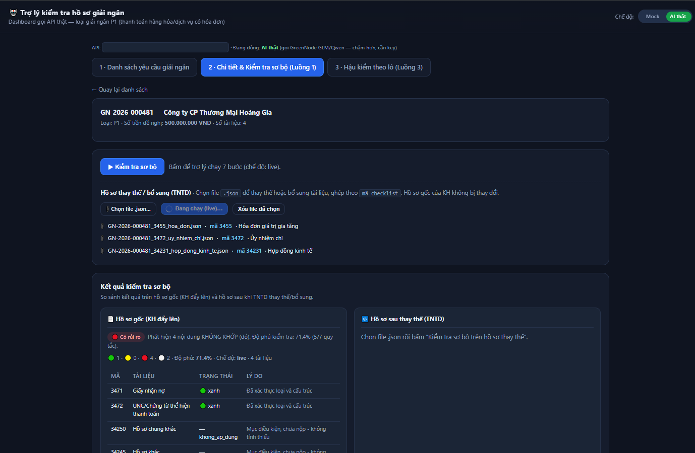
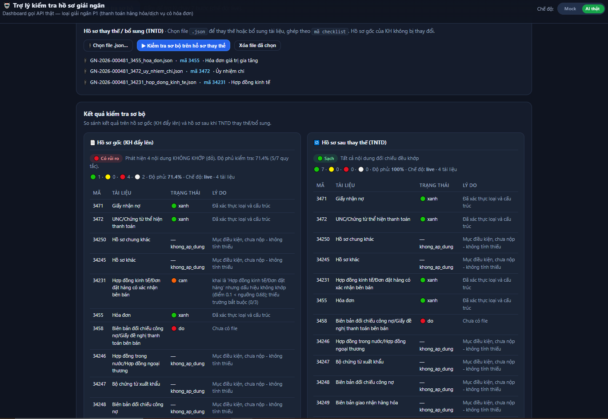

102 Maker/Checker TNTD — giảm khối lượng đọc/đối chiếu thủ công.
Khách hàng (rút ngắn thời gian chờ) · đơn vị kinh doanh (hồ sơ đúng ngay lần đầu).
Hằng ngày, liên tục.
OCR chuyển tài liệu thành dữ liệu. Đó không phải phần khó.
Bộ quy tắc đối chiếu chéo giữa các chứng từ, và đặc biệt:
Phát hiện hóa đơn đã dùng ở lần giải ngân trước — thứ Maker rất khó thấy bằng mắt.


| Nhóm hồ sơ | Kỳ vọng | Kết quả trợ lý |
|---|---|---|
| Hồ sơ sạch (GN-2026-000479) | 🟢 Sạch | 🟢 Sạch (7/7 khớp) |
| Hồ sơ đặc thù (GN-2026-000476) | 🟡 Cần chú ý | 🟡 Hóa đơn scan mờ + giải ngân một phần |
| Hồ sơ có sai lệch (GN-2026-000481) | 🔴 Rủi ro | 🔴 Lệch số tiền · sai người thụ hưởng · hóa đơn dùng lại |
Agent chỉ đưa "kết quả kiểm tra sơ bộ", không kết luận duyệt/từ chối. Thẩm quyền Maker/Checker không đổi.
Mỗi điểm 🔴🟡 trỏ về tài liệu + trang + vị trí để người tự xác nhận.
Không xác thực được thì báo ⚪ chưa kiểm tra được, không báo khớp bừa. Nêu rõ độ phủ.
Core/ECM/BPM là mô phỏng. Không dùng hồ sơ thật của MSB.